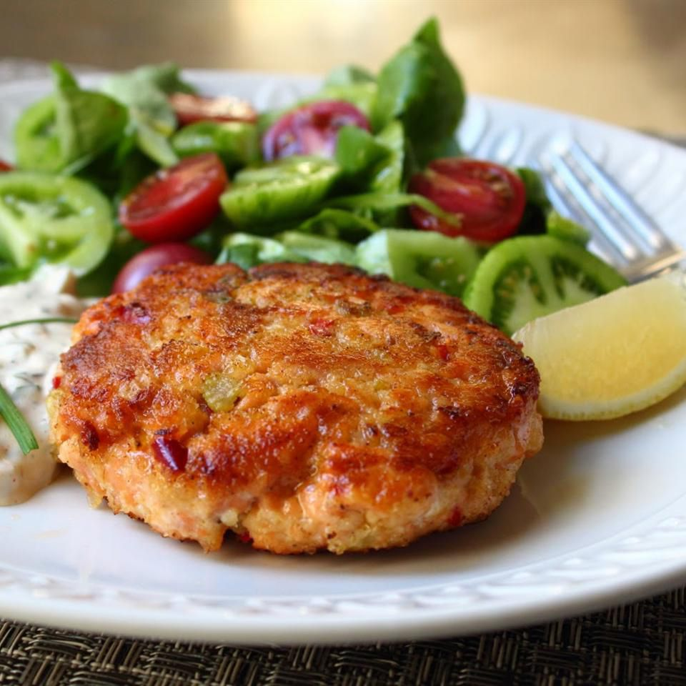

Chef John's Fresh Salmon Cakes

Description
Salmon cakes are an easy-to-make meal that will surely earn a spot on your go-to rotation list. Serve with lemon wedges and remoulade sauce.
Prep Time: 20 mins Cook Time: 15 mins Additional Time: 1 hr
Total Time: 1 hr 35 mins Servings: 4 Yield: 4 salmon cakes
Ingredients
- 1 tablespoon extra-virgin olive oil
- 1/4 cup minced onion
- 2 tablespoons minced red bell pepper
- 2 tablespoons minced celery
- salt and pepper to taste
- 1 tablespoon capers
- 1-1/4 pounds fresh wild salmon, coarsely chopped
- 1/4 cup mayonnaise
- 1/4 panko bread crumbs
- 2 cloves garlic, minced
- 1 teaspoon Dijon mustard
- 1 pinch cayenne pepper
- 1 pinch seafood seasoning (such as Old Bay)
- 1 tablespoon panko bread crumbs, or to taste
- 2 tablespoons olive oil, or as needed
Steps
- Heat extra virgin olive oil in a skillet over medium heat. Cook and stir onion, red pepper, celery, and a pinch of salt in hot oil until onion is soft and translucent, about 5 minutes. Add capers; cook and stir until fragrant, about 2 minutes. Remove from heat and cool to room temperature.
- Stir salmon, onion mixture, mayonnaise, 1/4 cup bread crumbs, garlic, mustard, cayenne, seafood seasoning, salt, and ground black pepper together in a bowl until well-mixed. Cover the bowl with plastic wrap and refrigerate until firmed and chilled, 1 to 2 hours.
- Form salmon mixture into four 1-inch thick patties; sprinkle remaining panko bread crumbs over each patty.
- Heat olive oil in a skillet over medium-heat. Cook patties in hot oil until golden and cooked through, 3 to 4 minutes per side.
Home